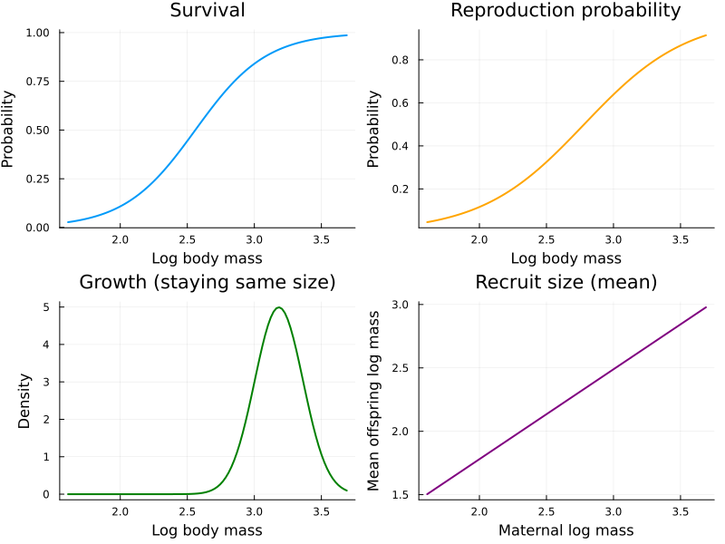
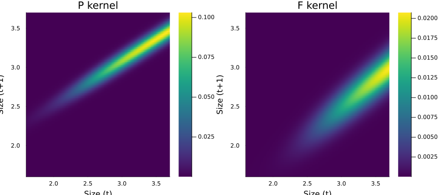
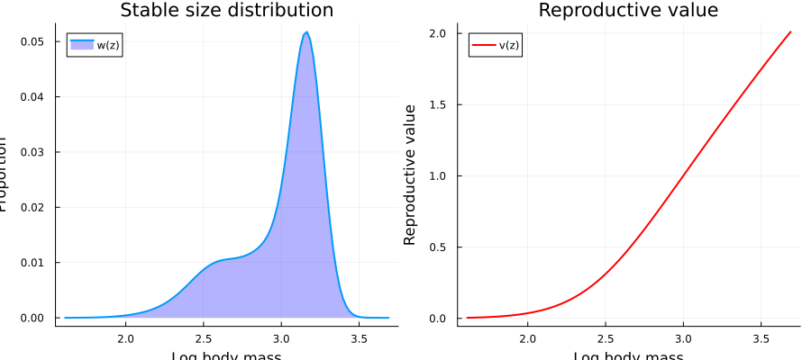
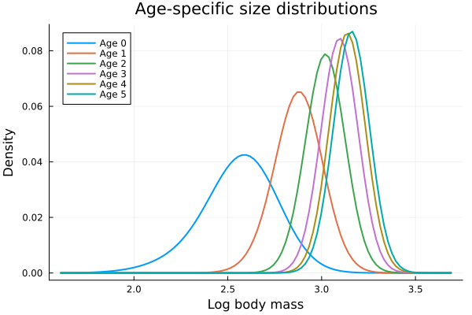
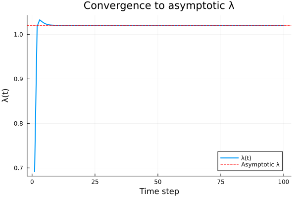

Ungulate IPM: Soay Sheep
Overview
This vignette builds a density-independent, deterministic IPM for Soay sheep (Ovis aries), an iteroparous ungulate from the St Kilda archipelago, Scotland. Unlike the monocarpic Oenothera in the previous vignette, Soay sheep can reproduce multiple times — survival appears in both the P and F kernels.
Key differences from the monocarp model:
- Survival is in both P and F kernels (reproductive individuals survive)
- A 0.5 sex ratio factor in the F kernel (females-only model)
- Recruit size depends on maternal size (not fixed)
- Recruitment probability is size-independent
Setup
using IntegralProjectionModels
using Distributions
using LinearAlgebra
using PlotsParameters
Size is log body mass. Parameters are from the textbook (Ellner, Childs & Rees, Chapter 2).
# Survival (logistic)
surv_int = -9.65
surv_z = 3.77
# Growth (normal)
grow_int = 1.41
grow_z = 0.557
grow_sd = 0.0799
# Reproduction probability (logistic, conditional on survival)
repr_int = -7.23
repr_z = 2.60
# Recruitment probability (logistic, intercept only — no size dependence)
recr_int = 1.93
# Recruit size (depends on maternal size)
rcsz_int = 0.362
rcsz_z = 0.709
rcsz_sd = 0.1590.159Domain
L = 1.6
U = 3.7
m = 100
domain = ContinuousDomain(L, U, m)
z = meshpoints(domain)
h = step_size(domain)0.021Vital Rate Functions
# Survival
s_z(z) = 1.0 / (1.0 + exp(-(surv_int + surv_z * z)))
# Growth: Normal(grow_int + grow_z * z, grow_sd)
g_z1z(z_prime, z) = pdf(Normal(grow_int + grow_z * z, grow_sd), z_prime)
# Reproduction probability (conditional on survival)
pb_z(z) = 1.0 / (1.0 + exp(-(repr_int + repr_z * z)))
# Recruitment probability (size-independent)
pr_z() = 1.0 / (1.0 + exp(-recr_int))
# Recruit size: depends on maternal size
c_z1z(z_prime, z) = pdf(Normal(rcsz_int + rcsz_z * z, rcsz_sd), z_prime)c_z1z (generic function with 1 method)Kernel Structure
For an iteroparous species, the kernel decomposition is:
$
P(z', z) = s(z) \cdot g(z'|z) $
$
F(z', z) = s(z) \cdot pb(z) \cdot \frac{1}{2} \cdot pr \cdot c(z'|z) $
Note that survival $s(z)$ appears in F because a mother must survive to census to be counted with her offspring. The factor $\frac{1}{2}$ accounts for the sex ratio (we model females only).
# P kernel: survival × growth
P_z1z(z_prime, z) = s_z(z) * g_z1z(z_prime, z)
# F kernel: survival × reproduction × 0.5 × recruitment × offspring size
function F_z1z(z_prime, z)
return s_z(z) * pb_z(z) * 0.5 * pr_z() * c_z1z(z_prime, z)
end
P = PKernel(CustomVitalRate(s_z), CustomVitalRate(g_z1z), domain)
F = FKernel(CustomVitalRate(F_z1z), domain)
K = P + FComposedKernel{Tuple{PKernel{CustomVitalRate{typeof(Main.s_z), Nothing}, CustomVitalRate{typeof(Main.g_z1z), Nothing}, ContinuousDomain{Float64}}, FKernel{CustomVitalRate{typeof(Main.F_z1z), Nothing}, ContinuousDomain{Float64}}}}((PKernel{CustomVitalRate{typeof(Main.s_z), Nothing}, CustomVitalRate{typeof(Main.g_z1z), Nothing}, ContinuousDomain{Float64}}(CustomVitalRate{typeof(Main.s_z), Nothing}(Main.s_z, nothing), CustomVitalRate{typeof(Main.g_z1z), Nothing}(Main.g_z1z, nothing), ContinuousDomain{Float64}(1.6, 3.7, 100), NoCorrection), FKernel{CustomVitalRate{typeof(Main.F_z1z), Nothing}, ContinuousDomain{Float64}}(CustomVitalRate{typeof(Main.F_z1z), Nothing}(Main.F_z1z, nothing), ContinuousDomain{Float64}(1.6, 3.7, 100), NoCorrection)))Note: Because the PKernel constructor expects survival and growth as separate arguments (and materializes as s(z) * g(z',z)), we pass the separate survival and growth functions. For the F kernel, we use a CustomVitalRate wrapping the full fecundity function including survival.
Eigenanalysis
n0 = uniform_population(domain)
prob = IPMProblem(K, domain, n0, (0, 100))
sol = solve(prob, EigenAnalysis())
λ = lambda(sol)1.0202608060555791println("Asymptotic growth rate (λ): ", λ)Asymptotic growth rate (λ): 1.0202608060555791Vital Rate Visualization
p1 = plot(z, s_z.(z), xlabel="Log body mass", ylabel="Probability",
title="Survival", label=false, linewidth=2)
p2 = plot(z, pb_z.(z), xlabel="Log body mass", ylabel="Probability",
title="Reproduction probability", label=false, linewidth=2, color=:orange)
p3 = plot(z, [pdf(Normal(grow_int + grow_z * zi, grow_sd), zi) for zi in z],
xlabel="Log body mass", ylabel="Density",
title="Growth (staying same size)", label=false, linewidth=2, color=:green)
p4 = plot(z, [rcsz_int + rcsz_z * zi for zi in z],
xlabel="Maternal log mass", ylabel="Mean offspring log mass",
title="Recruit size (mean)", label=false, linewidth=2, color=:purple)
plot(p1, p2, p3, p4, layout=(2, 2), size=(800, 600))
Kernel Visualization
K_matrix = materialize(K)
P_matrix = materialize(P)
F_matrix = materialize(F)
p1 = heatmap(z, z, P_matrix, title="P kernel",
xlabel="Size (t)", ylabel="Size (t+1)", color=:viridis)
p2 = heatmap(z, z, F_matrix, title="F kernel",
xlabel="Size (t)", ylabel="Size (t+1)", color=:viridis)
plot(p1, p2, layout=(1, 2), size=(900, 400))
Stable Distribution and Reproductive Value
w = stable_distribution(sol)
v = reproductive_value(sol)
p1 = plot(z, w, xlabel="Log body mass", ylabel="Proportion",
title="Stable size distribution", label="w(z)",
linewidth=2, fill=(0, 0.3, :blue))
p2 = plot(z, v, xlabel="Log body mass", ylabel="Reproductive value",
title="Reproductive value", label="v(z)",
linewidth=2, color=:red)
plot(p1, p2, layout=(1, 2), size=(900, 400))
Mean Size at Stable Distribution
mean_z = sum(w .* z)
var_z = sum(w .* z.^2) - mean_z^20.08001151303895959println("Mean log body mass: ", round(mean_z, digits=4))
println("SD log body mass: ", round(sqrt(var_z), digits=4))
println("Mean body mass (kg): ", round(exp(mean_z), digits=2))Mean log body mass: 2.9862
SD log body mass: 0.2829
Mean body mass (kg): 19.81Age-Specific Size Distributions
Even in a simple (non-age-structured) IPM, we can recover age-specific size distributions from the P and F kernels. Newborns (age 0) have the distribution $F \cdot w / \lambda$, and age $a+1$ has the distribution $P \cdot n_a / \lambda$.
n_ages = 8
age_dists = Vector{Vector{Float64}}(undef, n_ages)
# Age 0: offspring distribution
age_dists[1] = F_matrix * w ./ λ
# Subsequent ages: survival-growth
for a in 2:n_ages
age_dists[a] = P_matrix * age_dists[a-1] ./ λ
end
# Compute mean size at each age
mean_by_age = [sum(age_dists[a] ./ sum(age_dists[a]) .* z) for a in 1:n_ages]8-element Vector{Float64}:
2.5579825665856255
2.8742724689573462
3.0193842743079995
3.0954758738346055
3.136673176220535
3.159206073782345
3.1715804937835808
3.17838878972826println("Mean log body mass by age:")
for a in 1:n_ages
println(" Age $(a-1): ", round(mean_by_age[a], digits=3),
" (mass = ", round(exp(mean_by_age[a]), digits=2), " kg)")
endMean log body mass by age:
Age 0: 2.558 (mass = 12.91 kg)
Age 1: 2.874 (mass = 17.71 kg)
Age 2: 3.019 (mass = 20.48 kg)
Age 3: 3.095 (mass = 22.1 kg)
Age 4: 3.137 (mass = 23.03 kg)
Age 5: 3.159 (mass = 23.55 kg)
Age 6: 3.172 (mass = 23.85 kg)
Age 7: 3.178 (mass = 24.01 kg)plt = plot(xlabel="Log body mass", ylabel="Density", title="Age-specific size distributions")
for a in 1:min(n_ages, 6)
d = age_dists[a]
d_norm = d ./ sum(d)
plot!(plt, z, d_norm, label="Age $(a-1)", linewidth=2)
end
plt
Comparison with Monocarp Structure
| Feature | Monocarp (Oenothera) | Ungulate (Soay sheep) |
|---|---|---|
| Life history | Monocarpic (reproduce once, die) | Iteroparous (repeated reproduction) |
| Survival in F | No (flowering = death) | Yes (mothers must survive) |
| Sex ratio | Not modeled | 0.5 (females only) |
| Recruit size | Fixed distribution | Depends on maternal size |
| Recruitment probability | Size-independent | Size-independent |
| P kernel | s(z)(1-p_b(z)) \cdot g(z' | z)$ |
| F kernel | $p_b(z) \cdot b(z) \cdot p_r \cdot c_0(z')$ | s(z) \cdot pb(z) \cdot 0.5 \cdot pr \cdot c(z' |
Population Projection
sol_iter = solve(prob, DirectIteration())
plot(sol_iter.lambdas,
xlabel="Time step",
ylabel="λ(t)",
title="Convergence to asymptotic λ",
label="λ(t)",
linewidth=2)
hline!([λ], label="Asymptotic λ", linestyle=:dash, color=:red)
Summary
In this vignette we:
- Built a density-independent, deterministic IPM for Soay sheep
- Highlighted the key structural difference from monocarpic models: survival in the F kernel
- Computed $\lambda$, stable distribution, and reproductive value
- Recovered age-specific size distributions from the simple IPM
- Compared the ungulate and monocarp model structures